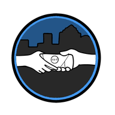

PDT App
An iOS app for the volunteers and board members of Project Downtown Tampa. It put the route, the headcount and the resource list for each outing in one place.
This page is a record of the project. The app is no longer in active development. The counter below is a browser copy of one screen; nothing you enter is saved or sent anywhere.
- Status
- Archived
- Built
- 2023 to 2024
- Platform
- iOS, SwiftUI
- Last version
- 2.0
What it did
Locations
A map of the seven stops on the route. Tap a stop to highlight its pin, then get directions to it.
Counter
Tap the screen to count the people served at each stop, add a note, and submit. Entries could be edited afterwards and refreshed live.
Requests
A place to write down what someone asked for, so it could be brought on the next outing.
Resources
Local organizations, meal services and their details, ready to share on the spot.
Donation
A direct link to give to the organization.
Board contacts
The board and their roles, reachable from inside the app.
Counter
- No counts submitted yet
Demo only. Counts stay on this page and clear when you leave.
How it was built
- Interface
- SwiftUI, MapKit
- On the phone
- Realm database
- Cloud
- Appwrite
- Sign-in
- Sign in with Apple
Version history
- 2.0
Counter data stored in the cloud, sent from every part of data collection.
- 1.3.8
Count by tapping the screen. Date and time recorded with each count. Sign in with Apple on the welcome screen.
- 1.3.7
Appwrite added as the backend. New welcome screen leading into the sidebar menu.
- 1.3.6
Resources page for websites and locations.
- 1.3.4
Editable fields in the list of counts, and a new record type for requests.
- 1.3.3
Board contact page.
- 1.3
Notes for each location, and data grouped by location.
- 1.2.2
Map view with directions, donation link, and a settings page with dark mode.
- 1.2
Counts saved on the phone and shown in their own view.